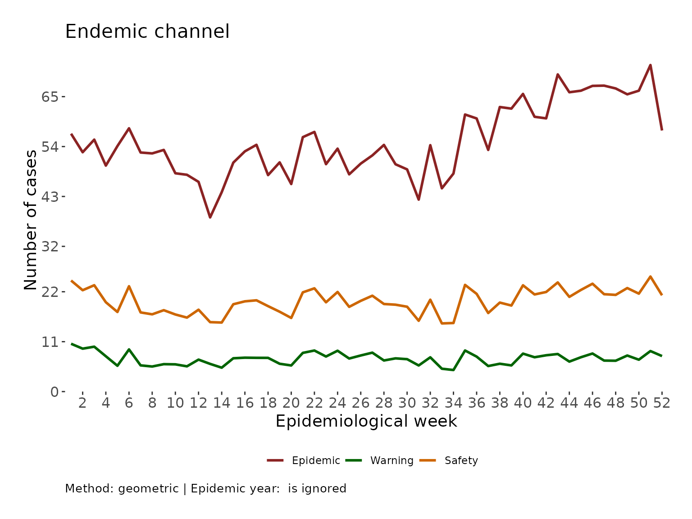

Create and return the endemic channel of a disease from an incidence object
Source:R/endemic_channel.R
endemic_channel.RdFunction that builds the endemic channel of a disease time series based on the selected method and windows of observation
Usage
endemic_channel(
incidence_historic,
observations = NULL,
method = c("geometric", "median", "mean", "unusual_behavior"),
geometric_method = "shifted",
outlier_years = NULL,
outliers_handling = c("ignored", "included", "replaced_by_median", "replaced_by_mean",
"replaced_by_geometric_mean"),
ci = 0.95,
plot = FALSE,
language = c("EN", "ES")
)Arguments
- incidence_historic
An incidence object with the historic weekly observations
- observations
A numeric vector with the current observations
- method
A string with the mean calculation method of preference (median, mean, or geometric) or to use the unusual behavior method (Poisson Distribution Test for Hypoendemic settings)
- geometric_method
A string with the selected method for geometric mean calculation; see: geometric_mean
- outlier_years
A numeric vector with the outlier years
- outliers_handling
A string with the handling decision regarding outlier years, see: outliers_handling function
- ci
= 0.95 A numeric value to specify the confidence interval to use with the geometric method
- plot
A boolean for displaying a plot
- language
Language for plot components
Examples
data_event <- epiCo::epi_data
data_ibague <- data_event[data_event$cod_mun_o == 73001, ]
incidence_historic <- incidence::incidence(data_ibague$fec_not,
interval = "1 epiweek"
)
endemic_channel(incidence_historic,
method = "geometric", plot = TRUE
)
#> Data after2022-12-25 were not used for the endemic channel calculation.

#> $data
#> central up_lim low_lim obs
#> 1 24.47382 56.83201 10.539270 NA
#> 2 22.33804 52.74742 9.459952 NA
#> 3 23.43837 55.52740 9.893443 NA
#> 4 19.69165 49.80177 7.786091 NA
#> 5 17.54179 54.10652 5.687196 NA
#> 6 23.21728 58.02311 9.290127 NA
#> 7 17.44415 52.68364 5.775955 NA
#> 8 17.02630 52.48901 5.522963 NA
#> 9 17.93639 53.25805 6.040666 NA
#> 10 16.99037 48.11213 5.999998 NA
#> 11 16.30440 47.77830 5.563896 NA
#> 12 18.04311 46.21868 7.043772 NA
#> 13 15.30253 38.38336 6.100753 NA
#> 14 15.21235 43.94540 5.265980 NA
#> 15 19.24401 50.45650 7.339627 NA
#> 16 19.88636 52.94265 7.469730 NA
#> 17 20.11381 54.38677 7.438673 NA
#> 18 18.82923 47.70870 7.431348 NA
#> 19 17.59734 50.51378 6.130334 NA
#> 20 16.22427 45.74133 5.754685 NA
#> 21 21.86827 56.07508 8.528231 NA
#> 22 22.75543 57.22492 9.048673 NA
#> 23 19.67685 50.11830 7.725291 NA
#> 24 21.95581 53.54033 9.003635 NA
#> 25 18.67200 47.87688 7.282086 NA
#> 26 19.99601 50.24641 7.957591 NA
#> 27 21.12839 52.04795 8.576878 NA
#> 28 19.30105 54.36276 6.852679 NA
#> 29 19.14772 50.09521 7.318767 NA
#> 30 18.70109 48.96618 7.142293 NA
#> 31 15.60288 42.30523 5.754605 NA
#> 32 20.24884 54.30387 7.550392 NA
#> 33 15.02208 44.79656 5.037505 NA
#> 34 15.10822 48.05064 4.750369 NA
#> 35 23.51291 61.06149 9.054102 NA
#> 36 21.53578 60.19264 7.705091 NA
#> 37 17.31170 53.25710 5.627324 NA
#> 38 19.61336 62.71382 6.133957 NA
#> 39 18.96260 62.36108 5.766100 NA
#> 40 23.42624 65.60374 8.365205 NA
#> 41 21.40414 60.56026 7.564980 NA
#> 42 21.94888 60.21215 8.000932 NA
#> 43 24.05417 69.89871 8.277736 NA
#> 44 20.86997 65.96651 6.602678 NA
#> 45 22.39830 66.30860 7.565894 NA
#> 46 23.77151 67.37194 8.387537 NA
#> 47 21.46182 67.42606 6.831331 NA
#> 48 21.30963 66.80371 6.797532 NA
#> 49 22.81365 65.51115 7.944642 NA
#> 50 21.58169 66.31157 7.023953 NA
#> 51 25.35126 71.96271 8.930826 NA
#> 52 21.21817 57.54274 7.823936 NA
#>
#> $plot
 #>
#>